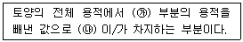
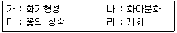
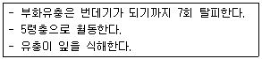

산림산업기사 (2014-08-17 기출문제)
1과목: 조림학
1. 간벌 방법 중에서 임분의 밀도조절을 목적으로 하는 정량간벌의 개념이 가장 강한 것은?
- 도태간벌
- 하층간벌
- 자유간벌
- 기계적간벌
(정답률: 83%)

2. 다음 수종 중 개화 이듬 해에 종자가 성숙하는 것은?
- 떡갈나무
- 갈참나무
- 굴참나무
- 졸찹나무
(정답률: 73%)
3. 파종 후 새(조류)에 의한 종자의 피해를 막는데 사용되는 것은?
- 명반
- 황산
- 광명단
- 이황화탄소
(정답률: 69%)
4. 묘포에서 단근작업을 하는 주목적은?
- 근계정리를 위해
- 생장을 억제하기 위해
- 묘목 식재작업을 용이하게 하기 위해
- 측근가 세근을 발달시켜 활착률을 높이기 위해
(정답률: 89%)
5. 장령림에 대한 시비효과로 옳지 않은 것은?
- 엽장과 엽량이 증가한다.
- 엽색이 더 진한 녹색으로 된다.
- 임내는 더 어두워지는 외과적 변화가 나타난다.
- 비배 후 3~4년이 경과한 임분에서는 흉고직경의 성장차이를 볼 수 없다.
(정답률: 81%)
6. 혼효림의 정의로 옳은 것은?
- 두 가지 또는 그 이상의 수종으로 이루어진 숲
- 현저한 수령차이가 있는 수목들로 이루어진 숲
- 영양번식에 의한 맹아가 기원이 되어 이루어진 숲
- 종자에서 발생한 치수가 기원이 되어 이루어진 숲
(정답률: 91%)
7. 숲을 구성하고 있는 나무 중 성숙목을 일부 벌채하고, 동시에 어린나무도 제거해서 갱신이 이루어지도록 하는 작업방법은?
- 개벌작업
- 택벌작업
- 산벌작업
- 왜림작업
(정답률: 73%)
8. 알칼리성 토양에서 결핍현상이 가장 많이 나타나는 원소는?
- 철
- 황
- 칼슘
- 마그네슘
(정답률: 64%)
9. 접목 활착의 성패를 좌우하는 요인으로 옳지 않은 것은?
- 수종의 특성
- 대목의 생활력
- 접목묘의 생산량
- 대목과 접수의 친화성
(정답률: 84%)
10. 다음 중 핵과를 결실하는 수종은?
- 벚나무
- 자귀나무
- 상수리나무
- 이태리포플러
(정답률: 71%)
11. 제벌의 시기로 가장 적절한 것은?
- 식재 후 바로 실시한다.
- 주로 겨울철에 실시한다.
- 간벌(솎아베기) 후 1년 이내에 실시한다.
- 조림목의 수관이 거의 접촉하는 시기에 한다.
(정답률: 73%)
12. 일반적으로 극핵이 발달하여 다음 어떤 부분의 형성에 이바지하게 되는가?
- 배
- 배유
- 배강
- 배주
(정답률: 76%)
13. 다음은 토양공극에 대한 설명이다. 빈칸 ㉮와 ㉯에 해당하는 용어로 올바른 것은?

- ㉮ : 고체 ㉯ : 물과 공기
- ㉮ : 액체 ㉯ : 토양과 물
- ㉮ : 액체 ㉯ : 토양과 공기
- ㉮ : 고체와 기체 ㉯ : 영하 온도에서 얼음
(정답률: 76%)
14. 처녀림과 가장 가까운 의미를 갖는 산림은?
- 보안림
- 원시림
- 열대림
- 동령림
(정답률: 91%)
15. 단순동령림에서 밀도만을 다르게 할 때 나타나는 임목의 생장현상 중 옳지 않는 것은?
- 고밀도일수록 지하고는 낮아진다.
- 고밀도일수록 단목의 평균간재적은 작아진다.
- 줄기의 평균흉고직경은 밀도가 높을수록 작게 된다.
- 상층목의 평균수고는 임목의 밀도에 관계없이 거의 비슷하게 나타난다.
(정답률: 71%)
16. 토양 수분함수 중에 영구위조점(permanent wilting point)의 pF 값으로 가장 적당한 것은?
- 약2.7
- 약4.2
- 약5.7
- 약7.2
(정답률: 63%)
17. 수목의 부위별 질소 함량을 바르게 나타낸 것은?
- 잎 ＞ 수간 ＞ 주지 ＞ 측지
- 잎 ＞ 주지 ＞ 측지 ＞ 수간
- 잎 ＞ 측지 ＞ 주지 ＞ 수간
- 잎 ＞ 주지 ＞ 수간 ＞ 측지
(정답률: 62%)
18. 가을에 종자가 성숙되는 수종은?
- 미루나무
- 사시나무
- 느릅나무
- 비자나무
(정답률: 62%)
19. 지하자연발아형에 속하는 수종은?
- 단풍나무
- 버드나무
- 아까시나무
- 물푸레나무
(정답률: 60%)
20. 반적인 개화생리 순서를 옳게 표시한 것은?

- 가 - 나 - 다 - 라
- 가 - 나 - 라 - 다
- 나 - 가 - 다 - 라
- 나 - 라 - 가 - 다
(정답률: 52%)
2과목: 산림보호학
21. 유충이 주로 토양 속에 서식하면서 어린 묘목의 줄기와 잎을 식해하고 특히 1년생 실생묘에 심한 피해를 주는 해충은?
- 소나무좀
- 거세미나방
- 미끈이하늘소
- 잣나무넓적잎벌
(정답률: 44%)
22. 대기오염에 의한 산림의 피해를 최소화시킬 수 있는 실제적인 방안이 아닌 것은?
- 방음벽 시설 설치
- 공해배출의 법적 규제
- 공해저항성 수종의 식재
- 임지비배를 통한 산림관리
(정답률: 82%)
23. 다음 설명에 부합되는 해충은?

- 솔나방
- 박쥐나방
- 소나무좀
- 오리나무잎벌레
(정답률: 75%)
24. 솔껍질깍지벌레의 생활사로 옳은 것은?
- 양성 모두 완전변태
- 양성 모두 불완전변태
- 암컷은 완전변태, 수컷은 불완전변태
- 암컷은 불완전변태, 수컷은 완전변태
(정답률: 70%)
25. 1년에 1회 발생하는 해충으로 옳지 않은 것은?
- 독나방
- 알락하늘소
- 미국흰불나방
- 솔껍질깍지벌레
(정답률: 85%)
26. 솔잎혹파리의 월동 형태로 옳은 것은?
- 알
- 성충
- 유충
- 번데기
(정답률: 78%)
27. 일정한 시간에 동일한 공간 내에서 생활하는 생물집단을 뜻하는 용어는?
- 기생
- 군집
- 군총
- 개체군
(정답률: 63%)
28. 포스파미돈 액제(50%)의 수간주입으로 방제효과를 얻을 수 있는 해충은?
- 매미나방
- 솔노랑잎벌
- 솔입혹파리
- 버들재주나방
(정답률: 77%)
29. 다음 중 수병의 잠복기간이 가장 짧은 것은?
- 잣나무 털녹병
- 포플러 잎녹병
- 소나무 재선충병
- 낙엽송 잎떨림병
(정답률: 58%)
30. 산불을 인위적으로 적당히 조절하여 이용하는 방법은?
- 화입
- 수간화
- 지표화
- 지중화
(정답률: 76%)
31. 다음 약제 중 훈증제가 아닌 것은?
- 시안화수소
- 크레오소트
- 클로리피크린
- 메틸브로마이드
(정답률: 50%)
32. 수목병의 1차 감염원이 되는 병원체의 월동 방법으로 거리가 가장 먼 것은?
- 토양 내에서 월동하는 경우
- 동물 체내에서 월동하는 경우
- 낙엽이 낙지에서 월동하는 경우
- 기주식물의 조직 내에서 월동하는 경우
(정답률: 71%)
33. 다음 중 수병의 중간기주 연결이 틀린 것은?
- 소나무 혹병 - 황벽나무
- 잣나무 털녹병 - 송이풀
- 포플러 잎녹병 - 일본잎갈나무
- 배나무 붉은별무늬병 - 향나무
(정답률: 76%)
34. 종묘소독용으로 주로 사용되지 않는 약제는?
- 캡탄제
- 티람제
- 유기수은제
- 클로로피크린제
(정답률: 46%)
35. 푸사리움 가지마름병균이 기주식물에 침입하는 방법으로 가장 옳은 것은?
- 각피 침입
- 뿌리를 통한 침입
- 상처를 통한 침입
- 기고,피목 등 자연개구를 통한 침입
(정답률: 67%)
36. 수목의 흰가루병에 대한 설명으로 옳지 않은 것은?
- 2차 감염원은 잎 표면에 형성되는 자낭포자이다.
- 포플러류 및 참나무류 등 다양한 수종에 발병한다.
- 가을에 병든 낙엽과 가지를 모아 소각하여 방제한다.
- 순의 생장이 위축되고 꽃과 열매가 달리지 못하는 피해가 나타난다.
(정답률: 52%)
37. 야생동물 서식지 구성요소에 해당되지 않는 것은?
- 물
- 먹이
- 수목
- 피난처
(정답률: 75%)
38. 다음 중 농도가 높은 고농도의 농약은?
- 100배액
- 1000배액
- 1500배액
- 2000배액
(정답률: 70%)
39. 밤나무 줄기마름병에 대한 설명으로 옳지 않은 것은?
- 바이러스에 의해 발병하는 수목병이다.
- 질소비료를 적게 주고 상처가 나지 않도록 한다.
- 발생 초기에는 감염 수목의 수피가 갈색으로 변한다.
- 동해 및 열해를 받아 형성층이 손상된 경우 쉽게 감염된다.
(정답률: 77%)
40. 볕데기에 대한 설명으로 옳지 않은 것은?
- 강한 직사광선이 직접 투입되는 것을 막아 예방할 수 있다.
- 코르크층이 발달된 수종에서 특히 취약하다.
- 피해부위는 움푹하게 들어가고 갈라져 터지므로 부후균의 침입을 받기 쉽다.
- 고립목의 줄기는 짚으로 둘러주거나 석회유 등을 발라 피해를 입지 않게 한다.
(정답률: 72%)
3과목: 임업경영학
41. 임지기망가에 관한 설명으로 옳지 않은 것은?
- 이율이 높을수록 임지기망가는 커진다.
- 무육비가 많을수록 임지기망가는 작아진다.
- 조림비가 많을수록 임지기망가는 작아진다.
- 주벌수확이 많을수록 임지기망가는 커진다.
(정답률: 76%)
42. 수간석해의 방법으로 총재적을 얻을 때 고려하지 않아도 되는 것은?
- 근주재적
- 지조간재적
- 결정간재적
- 초단부재적
(정답률: 62%)
43. 소반의 구획요건으로 옳지 않은 것은?
- 지종이 상이할 때
- 방위가 상이할 때
- 임종,임상 및 작업종이 상이할 때
- 임령,지위,지리 및 운반계통이 현저히 상이할 때
(정답률: 65%)
44. 임업노동의 특성에 대한 설명으로 옳지 않은 것은?
- 단위면적당 노동량이 많고 노동강도가 강하다.
- 작업장소인 산림까지의 이동시간이 길어서 실제작업시간이 짧다.
- 농업노동력을 벌채,운반노동에 이용하려면 별도의 훈련이 필요하다.
- 산림경영규모가 작아서 기계의 연속 가동 일수가 짧다.
(정답률: 75%)
45. 자산을 획득하기 위하여 제공한 경제적 가치의 측정치는?
- 원가
- 손익
- 수익
- 비용
(정답률: 65%)
46. 산림평가의 대상이 아닌 것은?
- 임지
- 임목
- 부산물
- 임업기계
(정답률: 68%)
47. 임업경영 지도원칙 중에서 보속성 원칙에 관한 설명으로 옳은 것은?
- 수익률을 가장 크게 하는 원칙
- 해마다 목재수확을 균등하게 할 수 있는 원칙
- 최소의 비용으로 최대의 효과를 발휘하는 원칙
- 생산량을 생산요소의 수량으로 나눈 값이 최고가 되도록 하는 원칙
(정답률: 81%)
48. 벌기 40년의 잣나무림에서 벌기마다 1천만원의 수입을 연이율 5%로 영구히 얻기 위한 전가합계는?
- 약 142만원
- 약 149만원
- 약 166만원
- 약 175만원
(정답률: 48%)
49. 임가소득 중에서 임업소득이 차지하는 비율을 무엇이라 하는가?
- 임업의존도
- 임업소득률
- 임업조수익
- 임업소득가계충족률
(정답률: 73%)
50. 어떤 산림의 벌채권 취득원가가 5천만원이고 잔존가치는 없으며 벌채추정량이 1백만 m3이고 당기벌채량이 1천m3 이라면 총 감가상각비는? (단, 생산량 비례법 이용)
- 500원
- 5,000원
- 50,000원
- 500,000원
(정답률: 79%)
51. 임업투자 효율을 측정하는 방법 중에서 투자에 의하여 장래에 예상되는 현금유입의 현재가와 현금유축의 현재가를 같게 하는 할인율을 의미하는 것은?
- 투자이익률법
- 순현재가치법
- 수익비용률법
- 내부투자수익률법
(정답률: 53%)
52. 임업경영의 성과분석에서 계산되는 다음의 항목 중에서 가장 큰 값은?
- 임가소득
- 임업소득
- 기타소득
- 임업순수익
(정답률: 65%)
53. 마이너스 값이 나올 수 있는 투자효율 분석법은?
- 회수기간법
- 순현재가치법
- 투자이익률법
- 수익비용률법
(정답률: 66%)
54. 국유림경영계획 실행상황을 평가하는데 해당되지 않는 것은?
- 연간평가
- 중간평가
- 사전평가
- 최종평가
(정답률: 74%)
55. 산림경영계획을 위한 지황조사의 설명으로 옳은 것은?
- 방위는 임지의 주 사면을 보고 4방위로 구분한다.
- 지위는 생산능력에 따라 m 단위로 표시한다.
- 토양의 건습도는 일반적으로 습,중,건 3단계로 분류한다.
- 경사도는 5단계로 구분하는데 가장 완만한 경사지는 15° 미만을 말한다.
(정답률: 66%)
56. 우리나라의 산림경영에 관한 설명으로 옳지 않은 것은?
- 공유림의 경영목적은 공공복지 증진 및 재정수입의 확보 등에 있다.
- 부재산주는 산림경영보다는 재산유지,묘지확보,투기적 동기에 목적이 있다.
- 국유림 경영의 총체적 목표는 산림생태계의 보호 및 다양한 산림기능의 최적발휘이다.
- 부업적 임업은 영세소유주를 포함한 것으로 연료,퇴비원료 등으로 산림을 경영한다.
(정답률: 56%)
57. 산림조사시 토양의 깊이(심도)는 천,중,심으로 구분하는데 상에 해당하는 것은?
- 30cm 이상
- 40cm 이상
- 50cm 이상
- 60cm 이상
(정답률: 71%)
58. 2010년의 ha당 재적이 137m3, 10년 후인 2020년의 재적이 213m3일 때 복리산 공식에 의하여 성장률을 구하면 얼마인가?
- 3.5%
- 약3.9%
- 약4.5%
- 약4.9%
(정답률: 42%)
59. 임목 수고를 측정하는데 측고기를 이용한다. 수고를 측정할 때 일정한 길이의 폴과 함께 사용하는 측고기는 무엇인가?
- 순토(sunnto) 측고기
- 와이제(Weise) 측고기
- 메리트(Merrit) 측고기
- 크리스톤(Christon) 측고기
(정답률: 54%)
60. 면적이 150ha 이고 윤벌기가 30년이며 1개의 영급이 10개의 영계로 구성되어 있는 산림의 법정영급면적은?
- 3ha
- 30ha
- 50ha
- 300ha
(정답률: 77%)
4과목: 산림공학
61. 최대강유량이 50mm/hr, 집수면적이 50ha, 유출계수가 0.5일때의 유량(m3/sec)은?
- 3.21
- 3.47
- 4.86
- 5.12
(정답률: 43%)
62. 석축 시공시 찰쌓기 공법의 설명으로 가장 옳은 것은?
- 뒷채움 없이 시공한다.
- 돌과 시멘트를 섞어서 쌓는다.
- 돌을 쌓고 돌 이음 부분의 외부에만 시멘트를 바른다.
- 돌을 쌓는 뒷부분에 콘크리트로 뒷채움을 하고 줄눈에 모르타르를 사용한다.
(정답률: 77%)
63. 1/25,000 지형도에서 도면상의 거리가 6mm일 때 실제거리는 얼마인가?(오류 신고가 접수된 문제입니다. 반드시 정답과 해설을 확인하시기 바랍니다.)
- 100mm
- 150mm
- 200mm
- 250mm
(정답률: 68%)
64. 암반 비탈면 녹화에 주로 사용하는 공법이 아닌 것은?
- 새집공법
- 피복녹화 공법
- 선떼붙이기 공법
- 덩굴받침망 공법
(정답률: 59%)
65. 임도를 기능에 따라 분류할 때 성격이 다른 것은?
- 주임도
- 부임도
- 사리도
- 작업도
(정답률: 77%)
66. 수평거리 100에 대하여 n이 수직거리를 나타낼 때 임도의 종단물매를 표시한 것으로 옳은 것은?
- n%
- n/10%
- n/100%
- n/1000%
(정답률: 61%)
67. 기초공사 공법에 대한 설명으로 옳지 않은 것은?
- 전면기초(mat foundation)는 상부구조의 전면적을 받치는 단일 슬랩의 지지층에 실려 있는 형태이다.
- 확대기초(footing foundation)는 직접기초의 일종으로 상부구조의 하중을 확대하여 직접 지반에 전달하는 것이다.
- 직접기초(direct foundation)는 견고한 지반 위에 기초 콘크리트를 직접 시공하고 이 기초콘크리트에 하중이 작용하도록 한다.
- 공기케이슨기초(pneumatic caisson foundation)는 큰관과 같은 모양의 통 내부를 수중굴착하여 침하시킨 다음 수중콘크리트를 쳐서 만든 기초이다.
(정답률: 73%)
68. 가선집재 방식과 비교할 때 트랙터 집재의 특징으로 옳지 않은 것은?
- 기동성이 높다.
- 작업이 단순하다.
- 작업 비용이 낮다.
- 급경사지에서 작업이 가능하다.
(정답률: 74%)
69. 톱체인(saw chain)의 날세우기와 점검시 주의사항으로 옳지 않은 것은?
- 드라이브링크의 끝을 뾰족하게 한다.
- 깊이제한부의 어깨부위를 뾰족하게 한다.
- 창날각, 가슴각, 지붕각을 일정하게 한다.
- 날의 길이와 커터의 높이를 일정하게 한다.
(정답률: 65%)
70. 벌목 운재 계획을 위한 예비조사가 아닌 것은?
- 임항 및 지황 조사
- 반출방법에 대한 조사
- 벌목구역의 개황 조사
- 기존 실행결과에 의한 조사
(정답률: 67%)
71. 비탈면 붕괴에 관여하는 주요 요인이 아닌 것은?
- 임상
- 토질
- 임령
- 지형
(정답률: 61%)
72. 다목정 공정기계인 프로세서(processor)의 기능으로 옳지 않은 것은?
- 송재
- 절단
- 벌목
- 조재목 마름질
(정답률: 46%)
73. 설계속도가 40km/h일 때 일반지형에서 임도의 최소곡선 반지름은?
- 40m
- 50m
- 60m
- 70m
(정답률: 56%)
74. 육상 저목장에 관한 설명으로 옳지 않은 것은?
- 수중 저목장보다 저목량이 더 적다.
- 일반적인 저목은 되도록 단기간으로 한다.
- 목재쌓기 방법으로는 직각쌓기와 평행쌓기가 있다.
- 산지저목장,중계저목장,최종저목장으로 설치할 수 있다.
(정답률: 62%)
75. 수로의 횡단면에 있어서 물과 접촉하는 수로 주변의 길이는?
- 유적
- 윤변
- 경심
- 동수반지름
(정답률: 73%)
76. 사면붕괴의 전조현상으로 옳지 않은 것은?
- 용수가 맑아짐
- 용출현상이 생김
- 사면에 균열이 생김
- 작은 돌이 사면에서 떨어짐
(정답률: 80%)
77. 임도의 노선 결정시 주요 통과지에 대한 유의사항으로 옳지 않은 것은?
- 지형에 순응한 선형으로 한다.
- 붕괴지,암석지,습지는 가급적 피한다.
- 너무 많은 흙깍기, 흙쌓기가 필요한 곳은 피한다.
- 가급적 교량,옹벽 등 구조물 시설이 많은 곳으로 한다.
(정답률: 77%)
78. 비탈면의 녹화를 위한 사방공사에 속하지 않는 것은?
- 조공
- 비탈덮기
- 바자얽기
- 비탈다듬기
(정답률: 51%)
79. 유수에 의한 계상면의 침식을 방지하고 현 계상면을 유지하기 위하여 시설하는 횡구조물은?
- 구곡막이
- 바닥막이
- 기슭막이
- 누구막이
(정답률: 48%)
80. 와이어로프에 대한 설명으로 옳은 것은?
- 작업줄은 보통꼬임을 주로 사용한다.
- 보통꼬임은 킹크가 일어나기 쉽지만 마모되지 않는다.
- 임업용 와이어로프는 스트랜드의 수가 4개인 것을 많이 사용한다.
- 와이어의 꼬임과 스트랜드의 꼬임이 동일방향으로 된 것을 보통꼬임이라 한다.
(정답률: 54%)